TaskSchedulerImpl: matching ready task sets to executors
component index · Driver JVM · Apache Spark dada2a6
Overview
TaskSchedulerImpl answers which task set gets the next compatible executor
offer? Its DAG scheduler submits ready stage attempts.
The driver backend supplies executor offers.
A TaskSetManager chooses a partition attempt on each
eligible offer. The task scheduler returns descriptions to the backend; it
neither sends LaunchTask itself nor obtains containers from YARN.
Flow at a glance
- Driver backend: Offers two free CPUs on executor 3.
- Task scheduler: Asks eligible task set managers for work in pool order.
- First match: A one-CPU task leaves one CPU for another match in this round.
Key distinction: An offer describes capacity on an existing executor, not a new grant from YARN.
Show the animated flow

Requirements analysis
Arbitrate across concurrent jobs, respect pool policy, CPU and custom resource
requirements, and let locality delay a launch without consuming a slot. Track
attempts by ID even when a stage is retried. Prevent a slow result fetch from
blocking scheduling on the driver. Scheduling contract ·
resource fit · result fetching.
Component architecture and lifetime
For master yarn, SparkContext asks YarnClusterManager for a scheduler,
backend and initialization. Client mode gets YarnScheduler (a
TaskSchedulerImpl with rack lookup); cluster mode gets YarnClusterScheduler,
which also signals ApplicationMaster.sparkContextInitialized(sc) before the
normal readiness wait. initialize builds the scheduling pools. start starts
the backend and, if enabled, the speculation timer. postStartHook waits on
backend.isReady(), not on a particular stage's inputs. DAGScheduler.stop
calls stop(exitCode), which stops the backend, result getter, timers and any
barrier coordinator. YARN factory · YARN scheduler ·
cluster hook · initialization · wait ·
shutdown caller · shutdown work.
Data models and concurrency
| Key |
Purpose |
(stageId, stageAttemptId) |
Identifies a TaskSetManager. Replacement makes older managers for that stage zombies: they accept no new work but may still receive results. |
TID (Long) |
Allocated by newTaskId() for a launch. taskIdToTaskSetManager, taskIdToExecutorId and executorIdToRunningTaskIds route updates and clean up a lost executor. A partition index is not a TID. |
WorkerOffer, availableCpus(i), availableResources(i) |
A snapshot plus a temporary per-round budget. CPU uses exact BigDecimal in this revision. The backend owns the persistent free-core and resource-address counters. |
The driver event loop, backend RPC thread, speculation timer and result-getter
workers enter this object from different threads. Scheduling, manager state
transitions and task-set pool removal use the scheduler monitor. submitTasks
releases it before calling reviveOffers; result deserialization runs on the
result-getter pool before it calls back under the monitor. Indexes and lock
contract · submission · attempt routing ·
completion callbacks.
Design patterns used
Composite (structural) + Strategy (behavioral). A Pool sorts its children
and recursively collects schedulable manager leaves. FIFO compares priority
(the submitting job ID on this path), then stage ID. FAIR favors a child below
its minimum share; if both are below, it compares running tasks relative to
minimum share, otherwise relative to weight. Ties break by name. Switching
the comparator changes who gets first choice,
not the checks for placing a task. Unlike a single global FIFO queue this can
share slots between configured pools, at the cost of sorting and traversal on
an offer round. Pool traversal · comparators ·
job ID as priority.
API/interface definitions
| Input and caller |
Output and recipient |
DAGScheduler → submitTasks(taskSet) |
Creates/registers a manager, adds it to a pool, and asks the backend to revive offers. It does not synchronously return task results. Submission |
DriverEndpoint → resourceOffers(offers, isAllFreeResources) |
Seq[Seq[TaskDescription]], grouped by offered executor in the scheduler's filtered/shuffled order. Each description names its executor; the backend flattens and launches them. Offer pass · return shape · backend consumption |
DriverEndpoint → statusUpdate(tid, state, bytes) |
RUNNING confirms launch; terminal states remove TID routing/running state and enqueue success/failure work in the TaskResultGetter. The getter calls handleSuccessfulTask or handleFailedTask with the captured manager. Status dispatch · result callbacks |
DAGScheduler → killAllTaskAttempts(stageId, interruptThread, reason) |
Sends backend.killTask for known running TIDs across all attempts of that stage and suspends their managers. Completion and cleanup need not be synchronous with the kill. Cancellation and removal |
Implementation notes: one offer round
- Suppose executor
3 offers two free CPUs under a compatible profile. The
scheduler learns the host/executor mapping, filters application-wide
exclusions, shuffles the remaining offers, and obtains the pool's sorted
task sets. This offer describes an already-registered executor, not two
newly granted YARN vcores. Build round.
- For a one-CPU task with no custom resource, the scheduler asks the first
eligible manager for work on
3 at the current locality. On acceptance it
records the TID and decrements the round's CPU budget to one. On
rejection no assignment is charged. It tries each executor at that locality
and repeats while it can launch, then considers broader locality levels.
A profile mismatch, unavailable GPU address or exhausted CPU budget can
prevent even asking the manager. Match and debit · fit ·
round iteration.
- The backend sends the descriptions. A later
FINISHED status can make the
executor offer capacity again before the partition result is accepted.
For an indirect result the getter reads a block; if it has disappeared,
TaskResultLost goes through failure handling despite that FINISHED
report. A still-live manager with an unfinished partition can then trigger
another reviveOffers. Terminal status/offer · indirect results ·
retry decision.
Late status and executor loss. A duplicate/late status for a TID no longer
in the routing map is logged and ignored here. That differs from a useful
older stage-attempt success: the DAG scheduler can notify the active manager
by (stageId, partitionId) to skip redundant work. On LossReasonPending the
scheduler cleans TID routing but preserves the executor-to-host mapping; it
notifies the pool of the loss when a concrete reason is available. That
distinction matters to per-task retry accounting on YARN.
Unknown TID · partition notification · two-phase loss.
Large sets of offers, locality passes and serialization in the manager all
consume time under the scheduling lock. A single-executor offer need not scan
every executor. Barrier sets are different: the scheduler checks the whole
set fits and, on the normal non-legacy path, gives back provisional assignments
instead of launching half a set. Diagnostic: if the driver reports that it
skipped a barrier round, compare the required and available compatible slots
in that log; a running YARN application or a large total core count does not
satisfy a simultaneous free-slot requirement. Offer scope ·
barrier admission · provisional rollback.